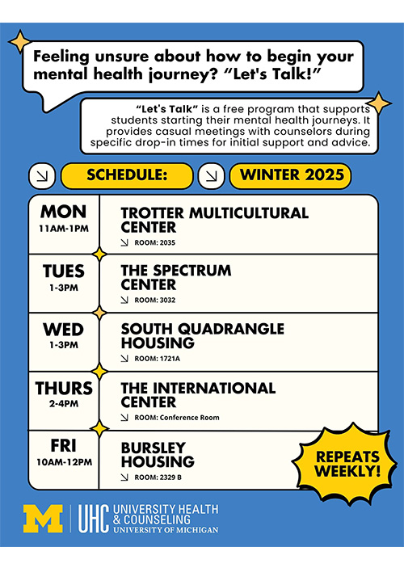

University Health & Counseling (UHC) supports the health and well-being of the campus community...
UHC is made up of CAPS and UHS. CAPS offers counseling services; UHS provides medical services...
CAPS creates an environment that values multicultural, multidisciplinary, and multi-theoretical practices...
Our Front Desk (Michigan Union 4th Floor) is open and ready to help support you. Call: (734) 764-8312.
CAPS has private telecounseling rooms. Contact the front desk for details.
Note: During high-demand periods, CAPS may not accommodate interviews or scavenger hunts.
Hours
- Monday - Friday: 9 AM - 5 PM
- Saturday: 10 AM - 4 PM
- Sunday: Closed
Let's Talk
“Let's Talk” is a free, casual drop-in program with counselors to support students...
Individual Peer Counseling

IPC offers a new, student-focused way to receive emotional support at U-M.